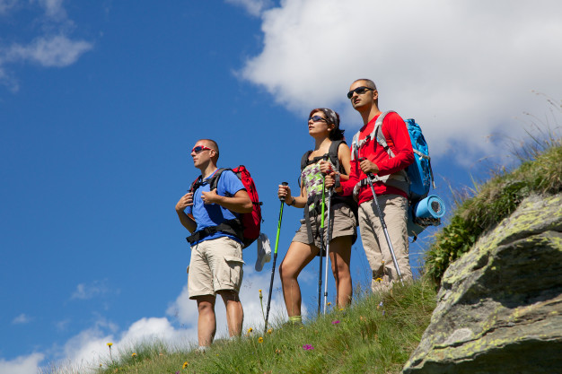
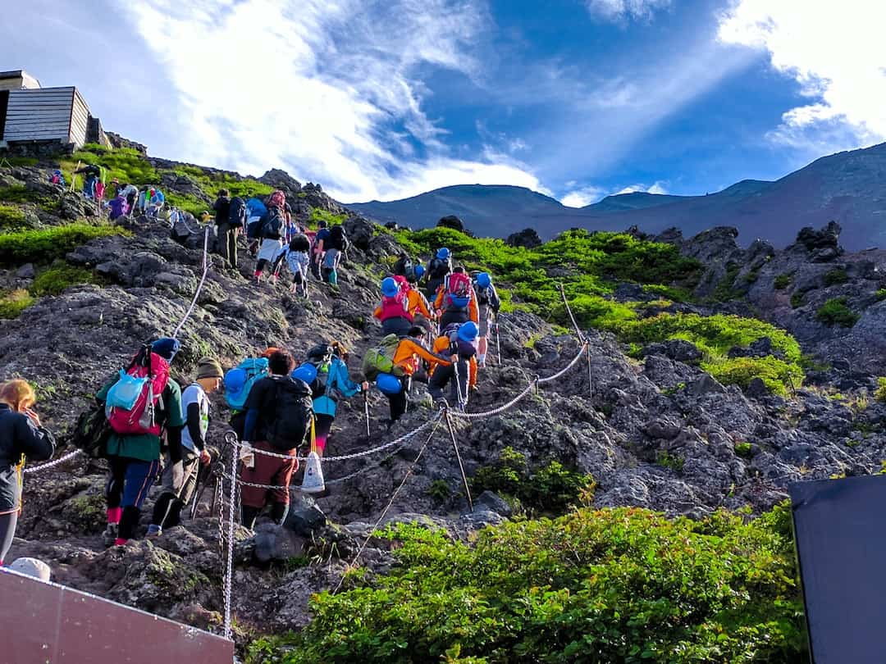
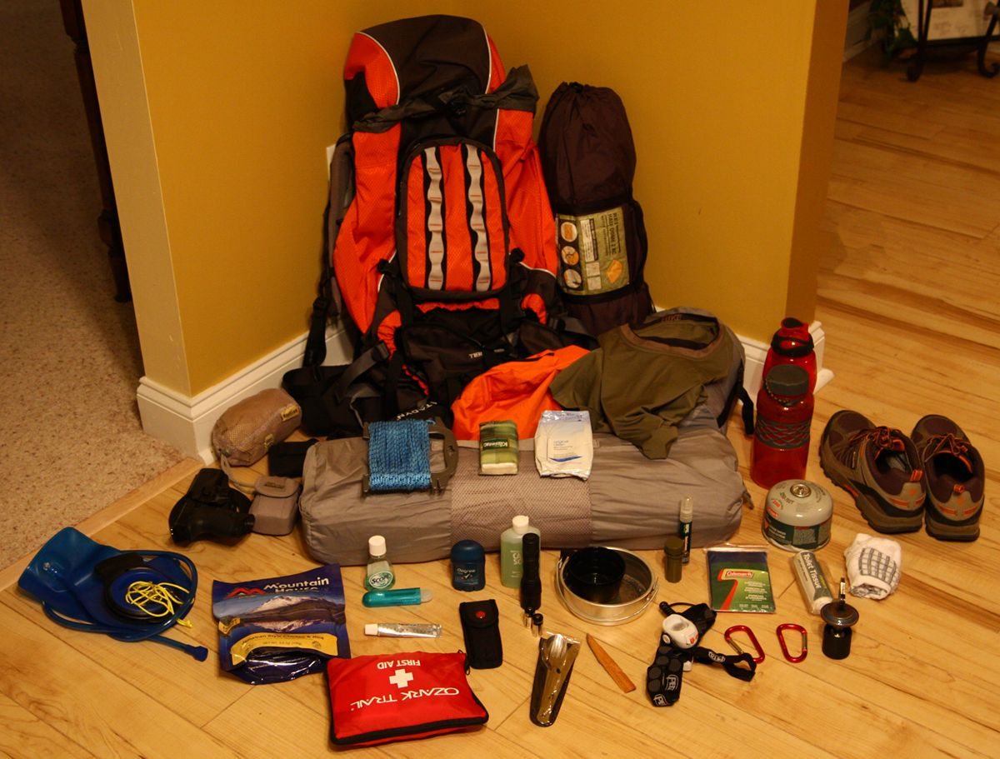
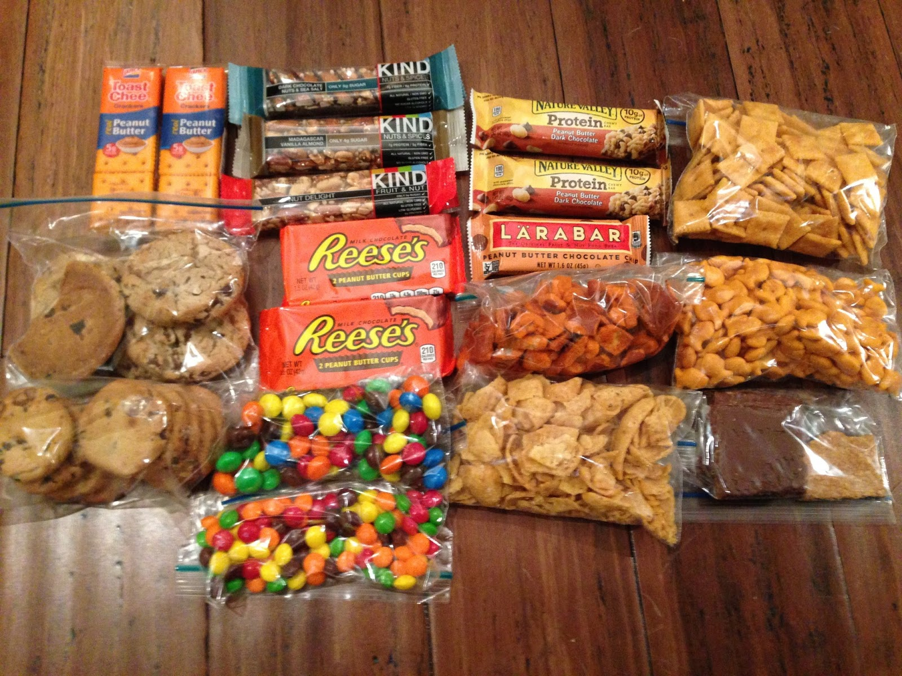
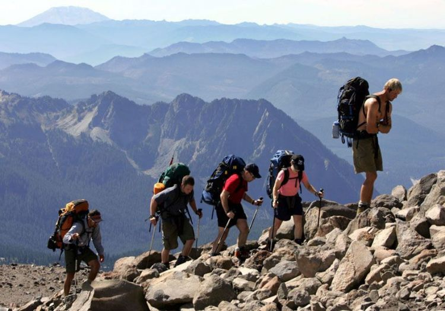
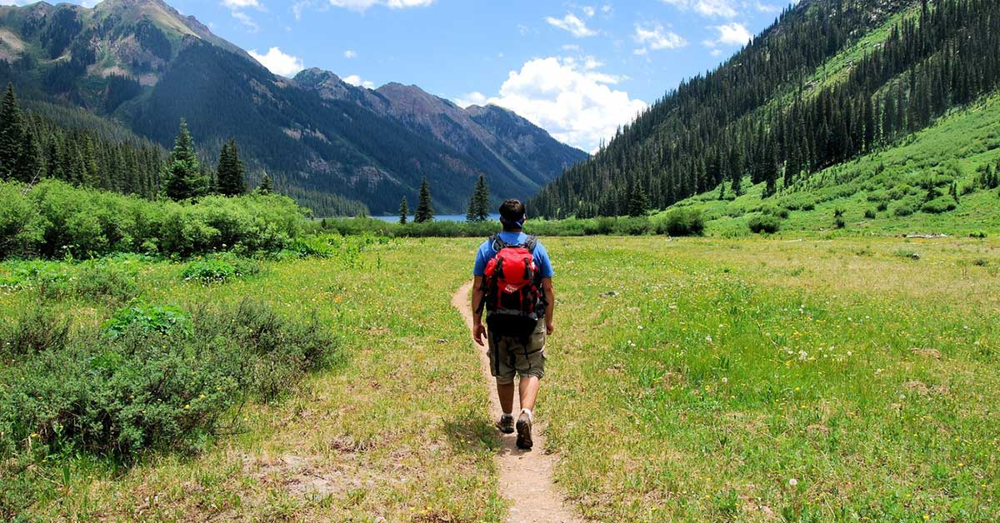
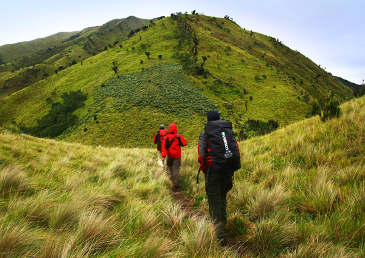
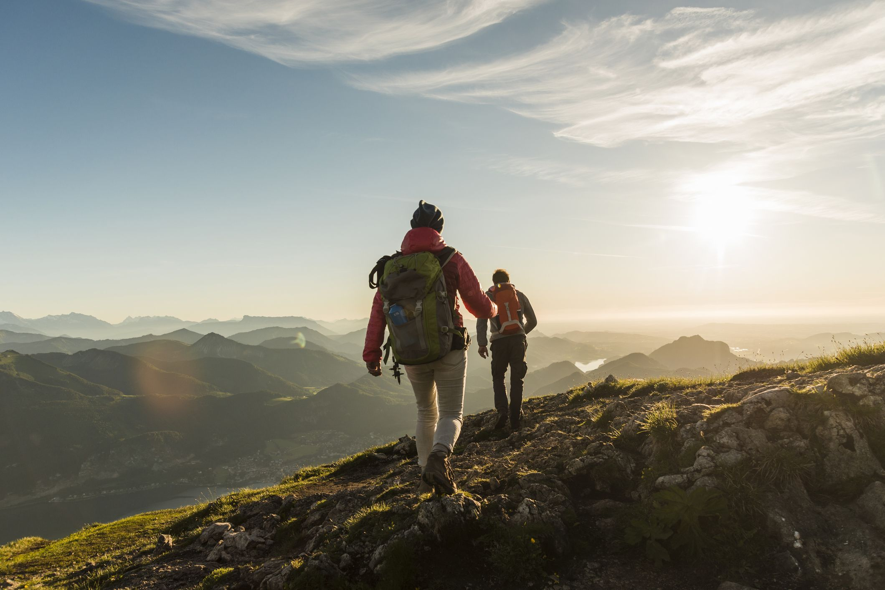
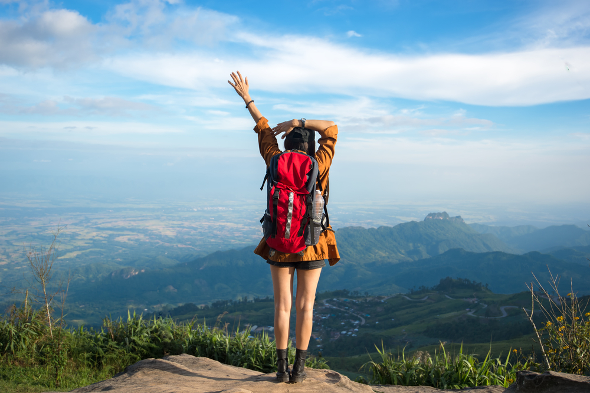

FIND ME ON :


Akhir-akhir ini kegiatan mendaki gunung tidak hanya dilakukan oleh pencinta alam, melainkan kegiatan favorit dilakukan di kalangan muda mudi yang umumnya terdiri dari pelajar dan mahasiswa. Banyak diantara mereka yang sudah berpengalaman dalam mendaki gunung, tapi tak sedikit juga yang belum begitu akrap dengan kegiatan yang satu ini.
Kebanyakan dari mereka yang masih newbie dalam urusan mendaki gunung memiliki motivasi lebih untuk mendaki karena mungkin ingin mecoba pengalaman baru yang penuh tantangan dan tak sedikit pula mereka yang di pameri foto-foto indahnya alam gunung dari teman-teman yang baru saja mendaki gunung sehingga mereka mempunyai keinginan untuk mendaki gunung setelah melihat foto mereka. Tetapi mendaki gunung agar bisa sampai puncak itu bukan perkara yang mudah.
1. Melatih otot kaki dan kesimbangan
Kegiatan melatih otot kaki bisa dilakukan dengan lari di pagi hari atau sore hari, diusahakan rutin dilakukan seminggu sebelum mendaki . kegiatan ini bertujuan untuk melatih otot kaki agar tidak kaget dalam mendaki gunung mengingat trek yang harus dilalui tidak lah mudah. Tapi jangan khawatir apabila kamu bisa rutin dalam melakukan kegiatan ini, trek yang sesulit apapun mampu kamu lewati dengan mudah.
Selain lari pagi ada juga hal yang harus kamu latih yaitu kesimbangan. Untuk melatih keseimbangan, bisa dilakukan dengan senam-senam kecil seperti berdiri beberapa saat dengan satu kaki . Kegiatan ini ideal dilakukan setelah lari pagi atau sore sudah kamu lakukan. Apabila lari pagi atau sore dan senam kecil sudah kamu lakukan secara rutin, kamu sudah lolos tahap awal dalam persiapan medaki gunung bagi pemula.
2. Jaga Kesehatan
Kesehatan merupakan hal yang paling vital dalam proses pendakian gunung, bayangkan saja apabila naik gunung dalam keadaan tidak fit. Meurut pengalaman saya, dulu waktu naik gunung sindoro ada salah satu teman saya dalam keadaan tidak fit nekat untuk naik gunung, alahasil teman saya itu berhenti di tengah jalan alias tidak sampai. Tidak Cuma itu saja, dalam masa pejalanan teman saya itu hanya mebuat susah pendaki yang lain karena menghambat perjlanan dan terus mengeluh.
Tentunya kamu tidak mau kan hal tersebut terjadi pada diri kamu, tapi tenang saja saya punya tips agar hal tersebut tidak terjadi yaitu diusahakan jangan tidur terlalu larut malam seminggu sebelum mendaki gunung dan tidurlah secara cukup. Kalo perlu konsumsi lah vitamin agar kamu teteap fit sampe hari untuk mendaki telah tiba.
3. Perlengkapan yang harus di bawa Ketika Mendaki Gunung
Setelah persiapan fisik sudah di lakukan kini tinggal mempersiapkan peralatan yang harus dibawa di saat kamu mau mendaki gunung. Perlengkapan mendaki gunung juga hal yang patut kamu siapkan dengan baik, bisa fatal akibatnya kalau kamu tidak mempersiapkan peralatan yang akan kamu bawa. Cerita tentang pengalaman saya lagi hehehe, karena dari pengalaman kita akan belajar.
Dulu waktu pertama kali mendaki gunung saya kurang memperhatikan dalam mempersiapkan peralatan mendaki gunung. Alhasil kegiatan mendaki gunung yang saya lakukan tidak seindah yang dibayangkan karena kurangnya dalam peralatan. Tentu hal tersebut tidak ingin terjadi pada kamu kan. Nah maka dari itu berikut peralatan yang wajib di bawa ketika mendaki gunung.
Yang pertama yaitu jaket, sarung tangan, tutup kepala, sepatu gunung, kaos kaki, tas besar, tas kecil, sleeping bag, tenda, matras, senter, tongkat untuk meringankan beban tubuh, mantol, peralatan memasak gunung jika diperlukan dan tidak lupa yaitu kamera buat selfie di puncak gunung 😀 . jangan lupa sebelum naik gunung kamu cek dulu perlengkapan kamu.
4. Konsumsi Yang Harus Dibawa
Konsumsi merupakan salah satu hal yang penting dalam proses mendaki gunung. Dulu saya pernah gagal sampai puncak gara-gara kehabisan konsumsi. Nah berikut konsumsi yang harus kamu bawa yaitu air putih 2 botol berisi 1.5L, Roti, Nasi + lauk kalo perlu, Mie instant, coklat untuk menambah tenaga kamu saat mendaki, kopi atau sejenisnya dan air cadangan. Itu merupakan konsumsi pokok yang harus saya bawa ketika mendaki gunung.
5. Cara berjalan ketika mendaki
Ketika mendaki gunung juga tidak asal-asalan dalam berjalan, pastinya kamu tidak mau kan hal yang buruk terjadi pada kamu. Ya saya akan berbagi tips untuk berjalan di sulitnya trek gunung. Yaitu dengan kaki selalu lentur setiap kali menapakan kaki di tanah dan tetap focus pada pijakan. Apabila kaki kamu kaku maka kemungkinan cidera bisa terjadi dan itu akan menghambat kamu dalam proses mendaki.
6. Jangan malu untuk meminta berhenti jika capek
Sebagai pendaki pemula pastinya kemampuan dalam mendaki tidak seperti merekan yang sudah terbiasa, maka kamu tidak perlu malu berkata capek dan minta untuk berhenti sejenak. Daripada di paksakan malah tidak baik.
7. Diusahakan tidak mengeluh
Mengeluh dalam perjalanan mendaki merupakan hal yang tidak baik untuk di lakukan. Dengan mengeluh akan mempengaruhi psikis dalam diri kita dan bisa berimbas pada tubuh. Dalam proses pendakian sebaiknya jangan mengeluh walaupun dalam keadaan seperti apapun, alangkah baiknya menyemangati diri sendiri dan selalu ceria agar perjalan mendaki gunung mu tidak terasa semakain berat dan yang pasti mengasyikan
8. Jangan membuang sampah di gunung
Tentu kita tidak inign kan indahnya lembah gunung yang di berikan tuhan kepada kita di kotori dengan sampah, maka jangan membuang sampah digunung. Alangkah baiknya jika sampah yang kita hasilkan di bawa turun.
9. Ikuti instruksi dan larangan petugas gunung
Sebelum mendaki kita tentunya harus mendaftar dulu ke petugas gunung setempat, nah setelah kita melakukan proses pendaftaran tersebut pastinya petugas gunung akan memberikan intruksi dan larangan ketika kita dalam perjalan mendaki gunung. Maka patuhilah instruksi dan larangan yang mereka sampaikan.